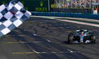

Thể thao

Tuy nhiên, sang tới vòng phân hạng, trời đổ mưa khiến tay đua của Ferrari mất đi lợi thế và chứng kiến bộ đôi Mercedes giành trọn hai vị trí xuất phát đầu. Vettel thậm chí chỉ xuất phát thứ tư, sau cả đồng đội Kimi Raikkonen. Do thời tiết nắng ráo tại cuộc đua chính thức chiều Chủ nhật, Mercedes phải tìm cách áp dụng chiến thuật hợp lý và cố gắng sử dụng Bottas chặn hậu hai chiếc SF71H để giữ chắc ngôi đầu cho Hamilton.
Màn xuất phát diễn ra đúng như dự đoán của Mercedes, Raikkonen nhanh chóng bị đồng đội Vettel vượt qua, trong khi Bottas hoàn thành nhiệm vụ che chắn, giúp Hamilton giữ vững ngôi đầu đoàn đua. Với bộ lốp xuất phát là lốp mềm trong khi bộ đôi Mercedes xuất phát với lốp cực mềm, Ferrari lộ rõ ý đồ cố gắng vào pit thay lốp càng muộn càng tốt để tấn công đối thủ ở cuối chặng nhờ ưu thế từ bộ lốp mới hơn.
Tuy nhiên, sang tới vòng phân hạng, trời đổ mưa khiến tay đua của Ferrari mất đi lợi thế và chứng kiến bộ đôi Mercedes giành trọn hai vị trí xuất phát đầu. Vettel thậm chí chỉ xuất phát thứ tư, sau cả đồng đội Kimi Raikkonen. Do thời tiết nắng ráo tại cuộc đua chính thức chiều Chủ nhật, Mercedes phải tìm cách áp dụng chiến thuật hợp lý và cố gắng sử dụng Bottas chặn hậu hai chiếc SF71H để giữ chắc ngôi đầu cho Hamilton.
Màn xuất phát diễn ra đúng như dự đoán của Mercedes, Raikkonen nhanh chóng bị đồng đội Vettel vượt qua, trong khi Bottas hoàn thành nhiệm vụ che chắn, giúp Hamilton giữ vững ngôi đầu đoàn đua. Với bộ lốp xuất phát là lốp mềm trong khi bộ đôi Mercedes xuất phát với lốp cực mềm, Ferrari lộ rõ ý đồ cố gắng vào pit thay lốp càng muộn càng tốt để tấn công đối thủ ở cuối chặng nhờ ưu thế từ bộ lốp mới hơn.
TIN LIÊN QUAN